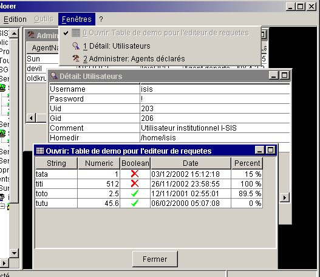
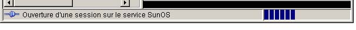

I-SIS Explorer

Guide d'utilisation
|
|
I-SIS Explorer |
|
|
Guide d'utilisation |
||
Cette zone permet l'affichage de sous-fenêtres représentant différentes actions en cours d'exécution, ou différentes informations complémentaires étant affichées.
Cette zone utilise le principe de l'interface multi-documents, ou MDI. Cela signifie que plusieurs sous-fenêtres peuvent être affichées en même temps, et pour une durée indéfinie. Le menu "Fenêtres" de la barre de menu permet de gérer ces sous-fenêtres.
Les sous-fenêtres pouvant ajoutées sont de multiples types. Il peut s'agir d'une sous-fenêtre affichant le détail d'un nœud ou d'une feuille, d'une sous-fenêtre permettant de suivre et de contrôler l'exécution d'une procédure sur une plate-forme... Ces sous-fenêtres sont les moyens d'interaction mis à disposition des processeurs logiciels de tâche (voir le document «Concept et Architecture I-SIS » pour plus d'informations sur les processeurs logiciels de tâche).

Le I-SIS Explorer étant conçu comme une structure évolutive, les types de sous-fenêtres pouvant être affichées peuvent évoluer, ou de nouveaux types peuvent être ajoutés, indépendamment de la structure elle-même ; c'est-à-dire indépendamment de I-SIS Explorer.
Vous pourrez trouver plus loin dans ce guide des exemples de sous-fenêtres pouvant s'afficher dans le I-SIS Explorer.
La barre d'état de la fenêtre principale de I-SIS Explorer a pour but d'afficher deux informations:
L'état de la connexion avec le I-SIS Portail,
Les opérations en cours d'exécution.
L'état de la connexion est indiqué par le biais d'une icône, et par un message qui est affiché tant qu'aucune opération n'est en cours d'exécution:
L'icône et le message «Non connecté» indiquent que le I-SIS Explorer n'est pas connecté au I-SIS Portail, et qu'aucune session n'a été ouverte sur celui-ci,
L'icône et le message «Connecté» indiquent que le I-SIS Explorer est connecté au I-SIS Portail, et qu'une session a été ouverte sur celui-ci.

La barre d'état permet également d'afficher les opérations en cours. Le contenu et la nature des informations affichées dépendent de l'opération qui est en cours d'exécution (exploration, exécution d'une commande, ouverture d'une session...). Une barre de progression, située à l'extrême droite de la barre d'état, indique le niveau de progression de la tâche en cours.
Copyright © 2003 BV Associates. Tous droits réservés.